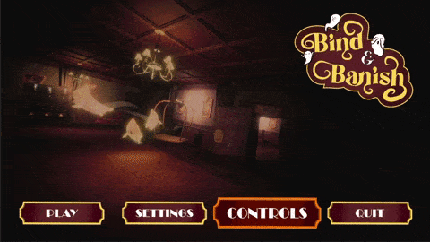
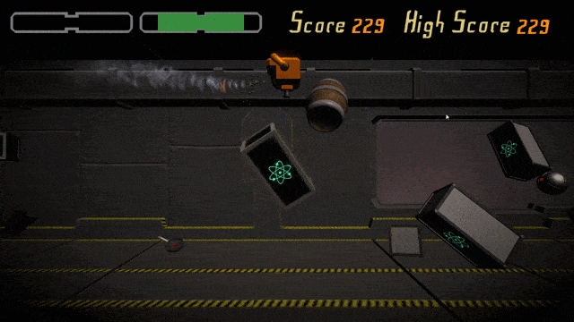
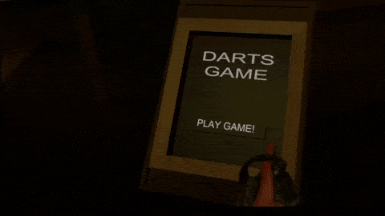

Indie-Shark Games was awarded Best Team at the Game Republic Student Showcase 2021 for this project. I contributed as Team Leader and Programmer, focusing on gameplay mechanics, game feel and VFX.

A game that was being developed by Indie-Shark Games, my focus was on game mechanics, UI and project planning. We took this project to Tranzfuser, pitching to potential investors in the final of the competition.

A 2 day game jam (Jamfuser) with the theme "Leap". Take control of a scared robot trying its best to escape before its imminent destruction. Dodge your way through a whole lot of debree.

A game that was being developed by Indie-Shark Games, my focus was on game mechanics, UI and project planning. We took this project to Tranzfuser, pitching to potential investors in the final of the competition.